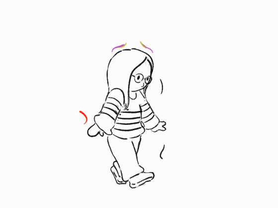

Hoy es un día especial y quería preparar algo único para ti. Un pequeño detalle para recordar lo bonito que es saber que estás viva.
La vida son momentos...
3 hermanos mexicanos que hacen musica que nos gusta
¡Nop, intenta otra vez! Infórmate bien 👀

Agradecido de por vida contigo...
Desde la lejania y desde el lado más humano que tengo; buscaré, velaré, pediré y rezaré por que siempre estés bien y siempre encuentres lo que busques.
Agradecido de por vida contigo...
Por todo lo sucedido, porque puedo decir que fui testigo de una vida haciendose y esforzandose en su hacer, contra si misma y contra la vida.
Lo especial de este dia no le quita lo especial que son todos los dias que estás viva, desde que cierras los ojos por la noche, a veces con lagrimas... hasta cuando te despierta tu mamá y te levantas con flojera para ver a tu hermano, todo esas cosas pequeñas y disgustos son lo que te hacen especial y única... desde alla arriba, no tan lejos, siempre cerquita de nuestros corazones, te estarán observando esos seres que partieron pero que nunca se fueron y no se irán, porque el amor que hubo es más grande que cualquier otra cosa, te observan con mucho orgullo por lo que logras y lograrás.
Desde la lejania, te comento, que las cosas se ven borrosas, pero por adentro están nitidas...
Te deseo mucha felicidad, no solo en este dia, si no en todos los dias... que te cuides un montón POR FAVOR, que sanes tus heridas y que tu capacidad sane a tus pacientes y a quienes quieres, un fuerte abrazo en la distancia...
si necesitas cualquier cosa, incluso contar un chiste, aquí estoy...
Perdón por de repente resultar hostigoso o por ser como soy, pero me importa que sonrias y que nunca lo dejes de hacer.
Con mucho cariño, Anibal...